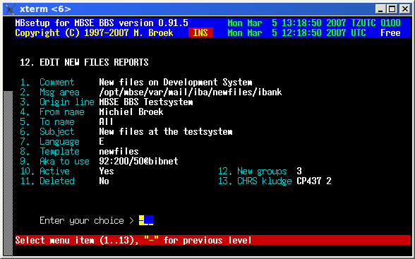

Last update 05-Mar-2007
MBSE BBS Setup - Newfiles Reports.
Introduction.
For each network you can define one or more newfiles reports to announce the newfiles that arrived on your BBS. The files to include in the reports are specified by the newfiles groups you can include or exclude for announcement.
Reports Setup.
Comment The comment for this report. Msg area The JAM message base to write the report in. Origin line The origin line to use. From name The name to use in the "From:" field. To name The name to use in the "To :" field. Subject The text to use in the "Subj:" field. Language Not in use yet, but DO select! Template Not in use yet. Aka to use The Fidonet aka to use in this area. Active If this report is active. Deleted If this report must be deleted. New groups The screen to define the groups to include. CHRS kludge The CHRS kludge an encoding to use.

 Back to index
Back to index